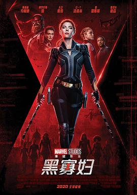

黑寡妇 / Black Widow
又名：The Black Widow
本来希望这是黑寡妇的最后一次出场，然后打个情怀分满星，结果看到结尾彩蛋黑寡妇要换人演了，算了算了还是4星。黑寡妇的剧情算是补完了，总体满意，身世复杂，而且不会再复活了。唯一不满意的就是生母的墓没有来个特写，pink blossom不知道是什么样的 =，= 说来疫情期间在家看4k也是挺爽的，不过本来确实是要去影院支持下Disney的 (ノへ￣、)
作品信息
| 导演 | 凯特·绍特兰 |
| 编剧 | 雅克·舍费尔 / 内德·本森 / 埃里克·皮尔森 / 斯坦·李 / 唐·赫克 / 唐·里科 |
| 主演 | 斯嘉丽·约翰逊 / 弗洛伦丝·皮尤 / 蕾切尔·薇兹 / 大卫·哈伯 / 雷·温斯顿 / 艾尔·安德森 / 维奥莱特·麦格劳 / O·T·法格本 / 威廉·赫特 / 欧嘉·柯瑞兰寇 / 瑞安·基拉·阿姆斯特朗 / 利亚尼·塞缪尔 / 米歇尔·李 / 刘易斯·扬 / C·C·斯密伏 / 南娜·布朗德尔 / 西蒙娜·齐夫科夫斯卡 / 谢娜·韦斯特 / 克劳迪娅·海因茨 / 露西·詹·穆雷 / 乔治亚·柯蒂斯 / 约恩·巴特勒 / 库尔特·岳 / 奥利维尔·里希特斯 / 安得烈·拜伦 / 卡利·内勒 / 罗伯特·普拉尔戈 / 贾辛特·布兰肯希普 / 乔希·亨利 / 阿里娅·布鲁克斯 / 查德维克·博斯曼 / 汤姆·希德勒斯顿 / 泰·赫尔利 / 豪尔赫·莱昂·马丁内斯 / 马里安·洛伦西克 / 茱莉亚·路易斯-德瑞弗斯 / 斯蒂芬·麦高文 / 亚当·普里克特 / 史蒂芬·萨姆森 / 乔基姆·斯卡利 |
| 类型 | 动作 / 科幻 / 冒险 |
| 制片国家/地区 | 美国 |
| 语言 | 英语 / 俄语 / 挪威语 / 匈牙利语 / 马其顿语 / 芬兰语 |
| 上映日期 | 2021-07-07(中国香港) / 2021-07-09(美国/美国网络) |
| 片长 | 133分钟 |
| IMDb | tt3480822 |
说过什么
2021-07-09 20:02:36
看过 · 时间来自广播，短评来自标记页
本来希望这是黑寡妇的最后一次出场，然后打个情怀分满星，结果看到结尾彩蛋黑寡妇要换人演了，算了算了还是4星。黑寡妇的剧情算是补完了，总体满意，身世复杂，而且不会再复活了。唯一不满意的就是生母的墓没有来个特写，pink blossom不知道是什么样的 =，= 说来疫情期间在家看4k也是挺爽的，不过本来确实是要去影院支持下Disney的 (ノへ￣、)
最后一次看到是 2026-08-01T11:05:18+10:00 · 豆瓣原页